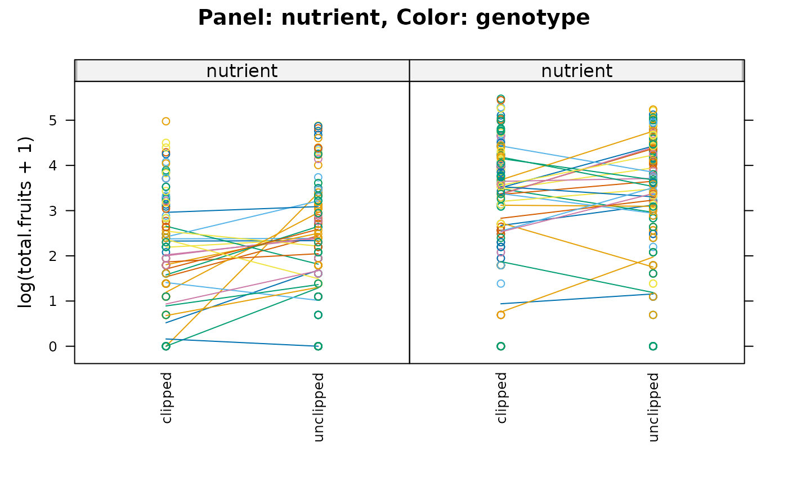

Arabidopsis clipping/fertilization data
Arabidopsis.RdData on genetic variation in responses to fertilization and simulated herbivory in Arabidopsis
Usage
data("Arabidopsis")Format
A data frame with 625 observations on the following 8 variables.
regregion: a factor with 3 levels
NL(Netherlands),SP(Spain),SW(Sweden)popupopulation: a factor with the form
n.Rrepresenting a population in regionRgengenotype: a factor with 24 (numeric-valued) levels
racka nuisance factor with 2 levels, one for each of two greenhouse racks
nutrientfertilization treatment/nutrient level (1, minimal nutrients or 8, added nutrients)
amdsimulated herbivory or "clipping" (apical meristem damage):
unclipped(baseline) orclippedstatusa nuisance factor for germination method (
Normal,Petri.Plate, orTransplant)total.fruitstotal fruit set per plant (integer)
References
Joshua A. Banta, Martin H. H Stevens, and Massimo Pigliucci (2010) A comprehensive test of the 'limiting resources' framework applied to plant tolerance to apical meristem damage. Oikos 119(2), 359–369; doi:10.1111/j.1600-0706.2009.17726.x
Examples
data(Arabidopsis)
summary(Arabidopsis[,"total.fruits"])
#> Min. 1st Qu. Median Mean 3rd Qu. Max.
#> 0.00 2.00 11.00 29.96 42.00 238.00
table(gsub("[0-9].","",levels(Arabidopsis[,"popu"])))
#>
#> NL SP SW
#> 2 4 3
library(lattice)
stripplot(log(total.fruits+1) ~ amd|nutrient, data = Arabidopsis,
groups = gen,
strip=strip.custom(strip.names=c(TRUE,TRUE)),
type=c('p','a'), ## points and panel-average value --
## see ?panel.xyplot
scales=list(x=list(rot=90)),
main="Panel: nutrient, Color: genotype")
